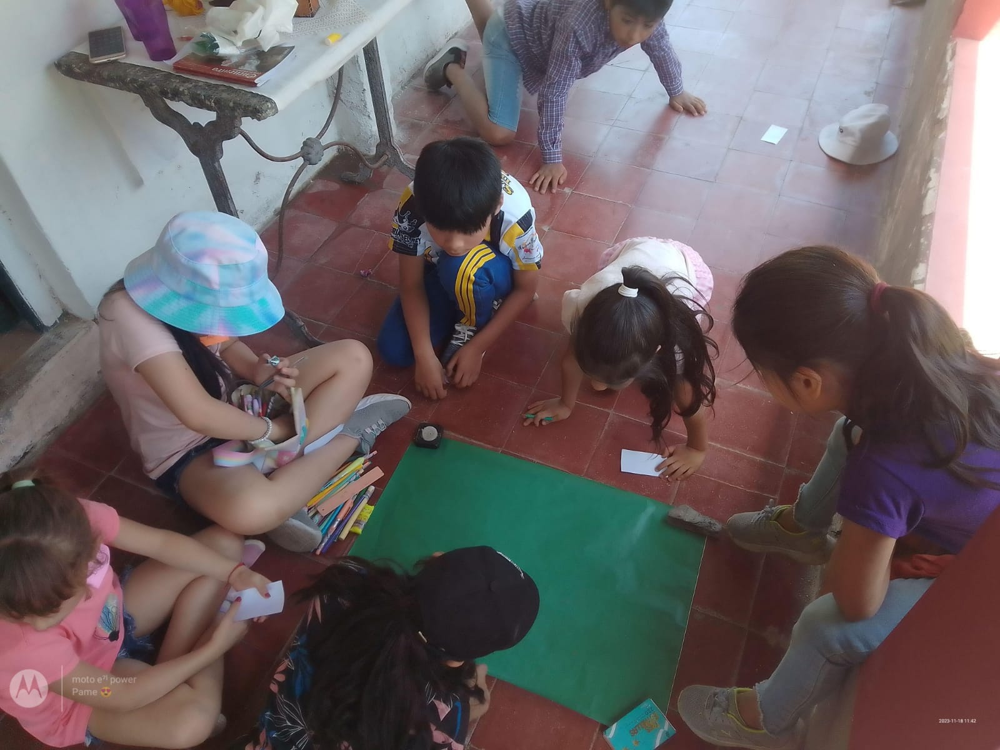
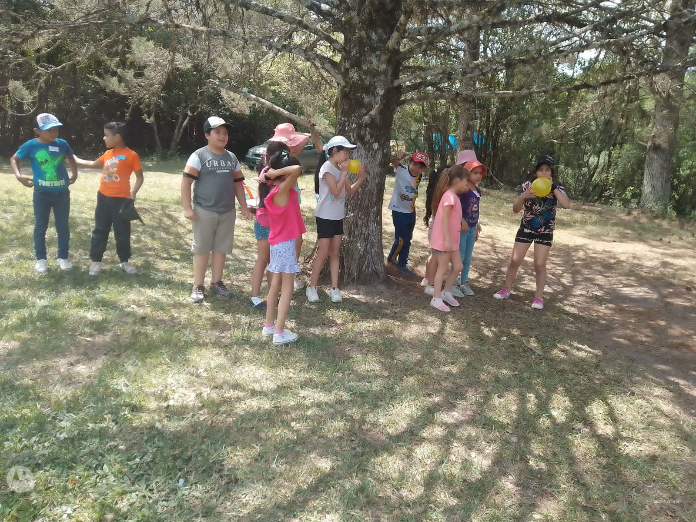

El Monasterio Cristo Rey ofrece la posibilidad de realizar la catequesis de preparación para los sacramentos de la comunión y la confirmación, tanto de niños como de adultos. Las inscripciones se realizan en el mes de febrero y todas las actividades están destinadas a personas oriundas del Siambón y alrededores. Los encuentros se realizan una vez por semana en el horario de 15:30 a 17:00.
Requisitos:
- Fotocopia del DNI
- Certificado de Bautismo
- Edad mínima: 8 años (o cumplirlos durante el año)

